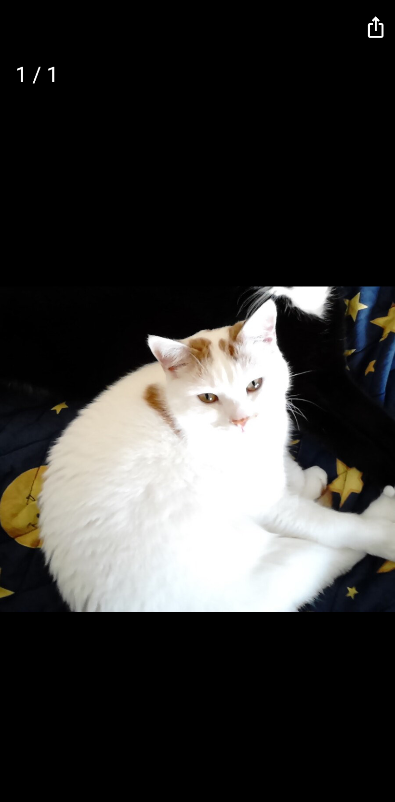

Die Fotos einer Katze kommen von der Kamera, aus der Galerie oder aus den Bildern eines Videos. Eines davon ist das Profilbild, das jede Liste zeigt.

Das Plus auf der Seite einer Katze fächert die Wege auf: Foto aufnehmen, aus der Galerie wählen, aus Video. Ein Video spielt auf seiner eigenen Seite; der Schieber sucht, Abspielen und Pause, Schritte von einem Bild, und die behaltenen Bilder kommen eines nach dem anderen in den Zuschneide-Schritt, in der vollen Größe des Videos.
Zuschneiden schneidet eine Katze aus einem Foto, beim Import oder später aus dem Menü des Fotos; später fügt der Schnitt ein neues Foto hinzu, das Original bleibt. Markieren brennt eine Ellipse in eine Kopie eines Fotos, um auf eine Katze zu zeigen, wenn Zuschneiden sie nicht trennen kann.
Ein Tipp auf ein Foto öffnet es in voller Größe; wische durch die Fotos der Katze, teile eines. Ein langer Druck auf ein Foto auf der Seite bietet Profilbild, zuschneiden, markieren, teilen und entfernen.
Die Ortsangaben der Kamera werden aus jedem gespeicherten Foto entfernt, damit nie in einen gemeinsamen Ordner gelangt, wo ein Bild aufgenommen wurde.